Stack (Yığın)
Tek taraflı giriş ve çıkışlarıa açık olan. İlk giren son çıkar LIFO(Last in First Out) mantığı ile çalışan bir ADT örneğidir.
Temelde iki veya üç fonksiyonu bulunur, bunlar :
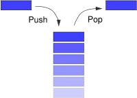Push -> Stack içerisinde bir bilgi koymaya (Stack'in en tepesine koyar)
Pop -> Stack içerisinden bir bilgi almaya (Stack'in en tepesinden alır)
Top -> Stack'in en tepesindeki bilgiyi alır ancak Stack'ten çıkartmaz sadece okur.
Bu fonksiyonlar sayesinde bir stack kullanılabilir hale gelmiş olur.
Temel olarak stack, bir array veya linked list üzerinde inşa edilebilirler. Örnek olarak bir dizi üzerine inşa edilen stack için bir değişken, dizide o anda kaç değer olduğunu tutacak ve her pop işleminden sonra bu değer azalatılırken, her push işleminden sonra arttırılacaktır.
Benzer uygulama linked list üzerinde yapılırsa, pop işlemiyle sondan bir düğüm silinecek veya push işlemi ile sona bir düğüm eklenecektir.
Aşağıda basit bir bağlı liste üzerinde stack kullanılan kod örneği verilmiştir :
- Bağlı liste(linked list) ile yığın(stack) örnek kodu (C dilinde)
- Bağlı liste(linked list) ile yığın(stack) örnek kodu (C++ dilinde) Bu kod, bağlı listeden yığın çıkarma, ekleme ve teki öğeyi alma işlemlerini uygular. Kodda push, pop, peek ve isEmpty yöntemleri uygulanmıştır. İlk üç yöntem Stack sınıfının üyeleridir, isEmpty yöntemi ise Stack sınıfının önemi yaratmadığını belirtmek için uygulanmıştır. Yığın işlemleri, bağlı listenin en başına (top) veri ekleme ve kaldırma işlemleri ile uygulanmaktadır. Bağlı listenin her düğümü data ve next alanlarını içerir. data alanı yığında tutulacak veriyi içerir, next ise bağlı listenin bir sonraki düğümüne işaret eder.
Bağlı liste üzerinden yığın kodlamasının açıklaması.
Yukarıdaki bağlı liste kodunu anlamaya öncelikle kullandığımı veri yapısını oluşturan bir düğümü anlayarak başlayalım. Düğüm yapısı için kullanılan kodu ele alırsak :
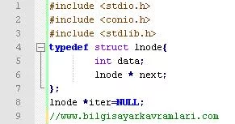Yukarıdaki bu kodda bulunan lnode isimli yapı(struct) iki üyeye sahiptir. Buradaki data isimli int değişkeni, düğüm içindeki verileri tutmak için kullanılmakta ve yine kendi tipinden (lnode) bir gösterici(pointer) ile next isimli bir değişken tanımlanmaktadır. Bu ikinci gösterici değişkenin amacı, kendi tipinden düğümleri göstermek ve bu sayede bağlı listeyi inşa etmektir.
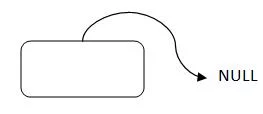Kodun 8. satırında ise global bir düğüm değişkeni olan iter tanımlanmış ve NULL olarak içeriği atanmıştır. Bu değişken bağlı listenin ilk elemanını tutmak için kodun geri kalan kısmında kullanılacaktır.
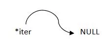Veri yapımızı tanıdıktan sonra, bağlı liste üzerindeki yığın(stack) fonksiyonlarını anlamaya çalışalım. Bu kodda kullanılan 3 fonksiyon şunlardır:
- void push(int) -> bu fonksiyon, yığına veri eklemek için kullanılır.
- int pop() -> bu fonksiyon, yığından veri almak için kullanılır.
- void printStack() -> bu fonksiyon ise yığının içeriğini ekrana basmak için kullanılır.
Bu fonksiyonların çalışmalarını anlamaya push fonksiyonu ile başlayalım.
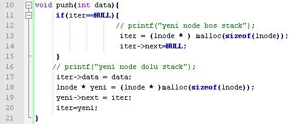Yukarıdaki kodun 11. satırında bulunan if kontrolü ile, iter göstericisinin ilk değeri kontrol edilmiştir. Buradaki amaç, bağlı listenin ve dolayısıyla yığının içinin boş olup olmadığını anlamaktır. Şayet yığın boşsa (ve dolayısıyla iter'in değeri NULL ise) o zaman hafızada(ram) yeni bir düğüm tanımlamış ve iter değişkeni bu düğümü gösterecek şekilde atanmıştır (kodun 13. satırı). Ayrıca bu yeni düğümün gösterdiği bağlantı NULL olarak atanmıştır. Bu sayede veri yapımızın son göstericisini NULL olarak ayarlanmış olunur.
Kodun 17. satırında push fonksiyonuna parametre veren ve yığına eklenmek istenen data değişkeni, yeni oluşturduğumuz bu düğümün içeerisine veri olarak kaydedilmiş ve ardından yeni bir düğüm oluşturularak bağlı listenin başına eklenmiştir.
Bu fonksiyonun çalışmasını aşağıdaki gibi hayal etmemiz mümkündür :
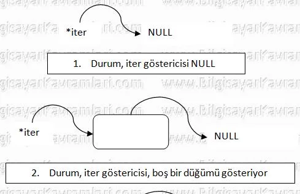 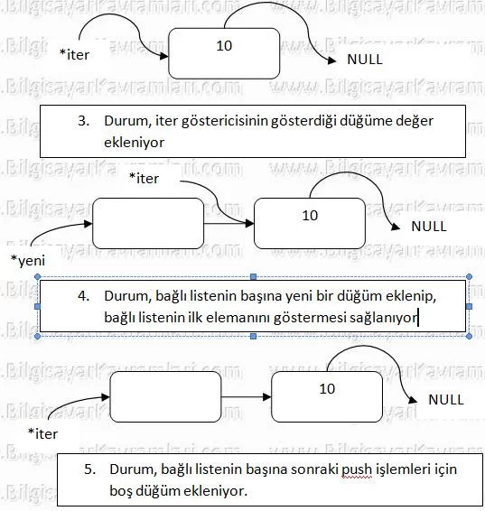Yukarıdaki temsili resimlerde gösterilen 4. durum için, kodun 18. sattırında yeni bir düğüm göstericisi tanımlanmış ve bu düğüm göstericisi, bağlı listenin ilk elemanını, kendi next göstericisi ile kodun 19. satırında göstermiştir. Bu sayede bağlı listenin başına yeni bir düğüm eklenmiş ve daha sonraki ekleme işlemleri için bu düğüm boş olarak tutulmuştur. Zaten kodun 11. satırında bağlı listenin boş olup olmadığının kontrol edilmesi ve şayet boş ise yeni bir düğüm eklenmesinin sebebi de budur.
Push fonksiyonu yukarıdaki şekilde, bağlı listeye yeni veri geldikçe ekleme işlemi yapar ve liste içerisine veri eklenerek temsili olarak sola doğru büyür. Listenin son elemanı her zaman için NULL değerindedir ve listeye yeni eklenen değerler soldan eklenir.
Kodun 44. satırına kadar olan main fonksiyonu içerisinde bulunan push fonksiyonları çalıştırıldığında bağlı listenin hali aşağıdaki şekli alır.
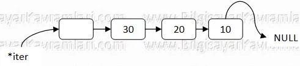Push fonksiyonunun çalışmasına baktıktan sonra sıradaki fonksiyonumuz olan pop fonksiyonunu inceleyelim
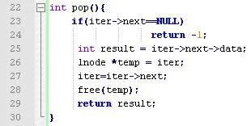pop fonksiyonu, iter ile gösterilmekte olan düğümden(node) bir sonraki düğümün verisini döndürmekte ve iter göstericisini sağa doğru ilerletmektedir.
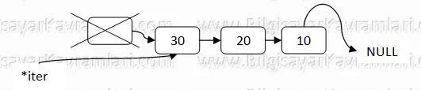Kodun 28. satırındaki free fonksiyonunun amacı, bu ilk başta tutulan düğümün hafızada(ram) kaldırılması ve gereksiz yere yer kaplamasıdır.
Son olarak yığının(stack) içeriğini ekrana basan fonksiyonumuz olan printStack fonksiyonunu incelersek :
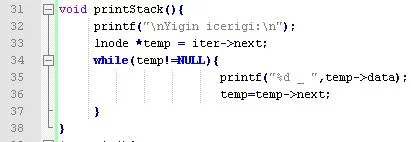Bu kodda, temp isminde geçici bir gösterici, iter'in gösterdiği ilk elemandan başlayarak bağlı listenin sonuna kadar olan bütün elemanları sırasıyla ekrana basmaktır.
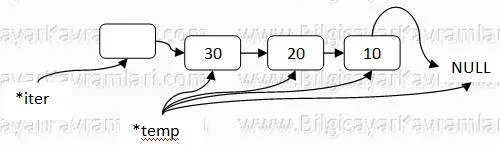
Kaynakça : Bilgisayar Kavramları